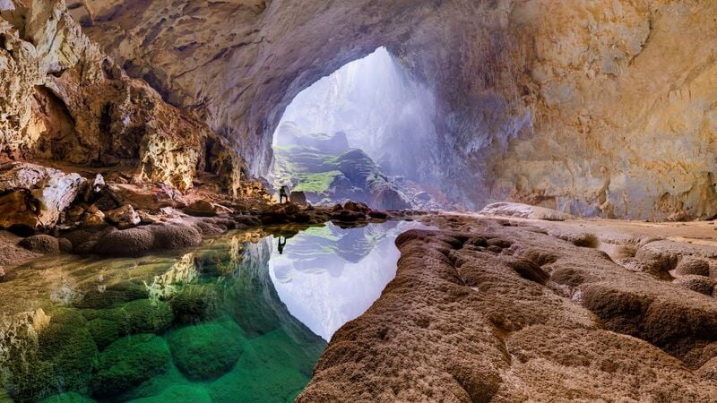
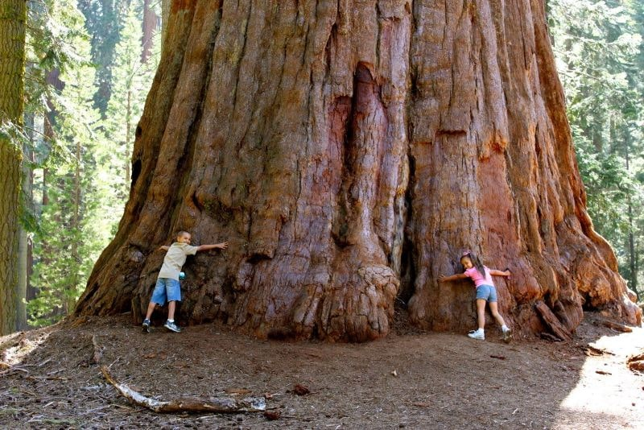

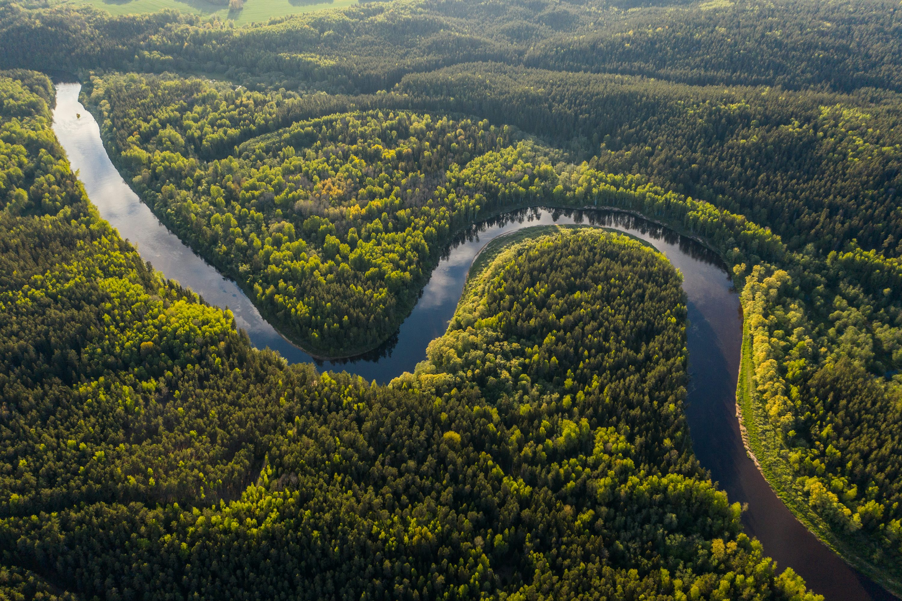
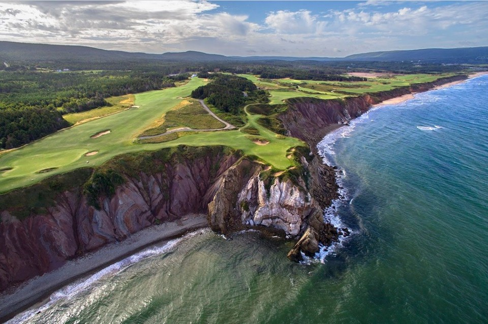

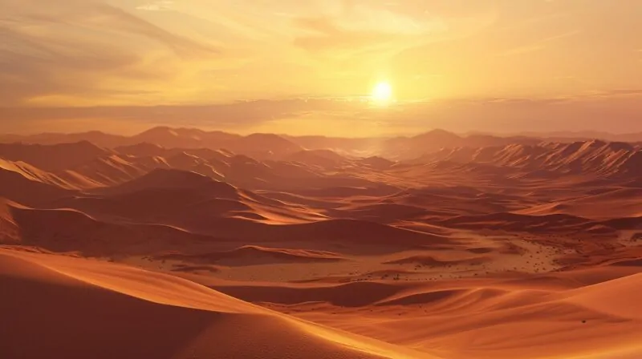

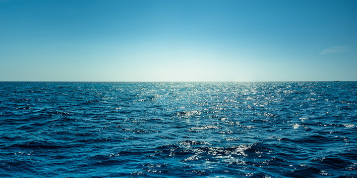
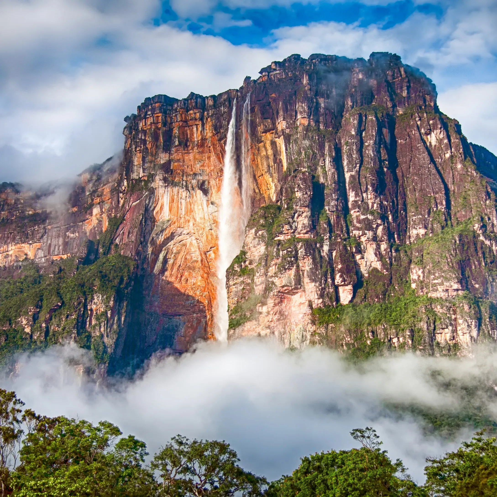
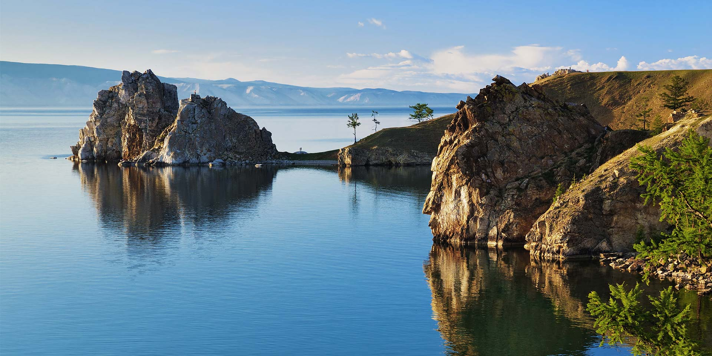
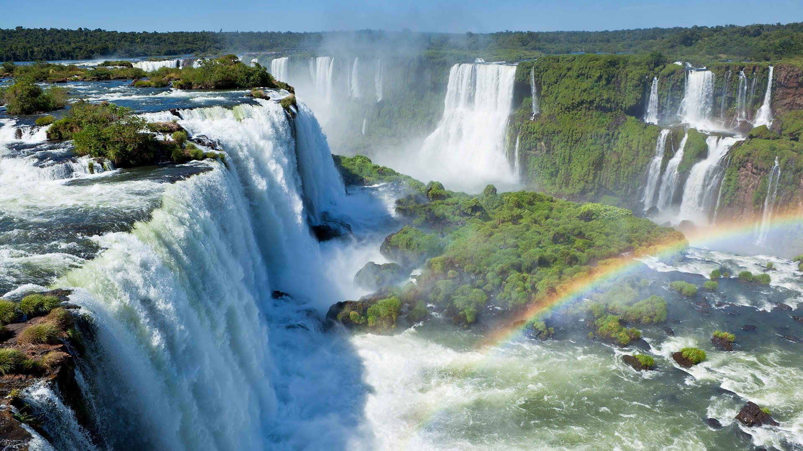

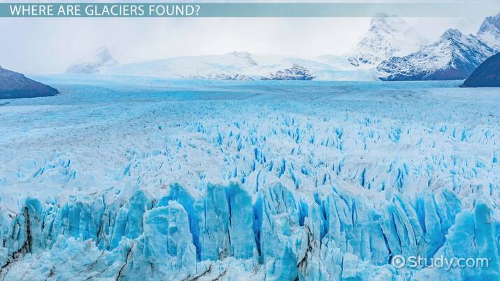

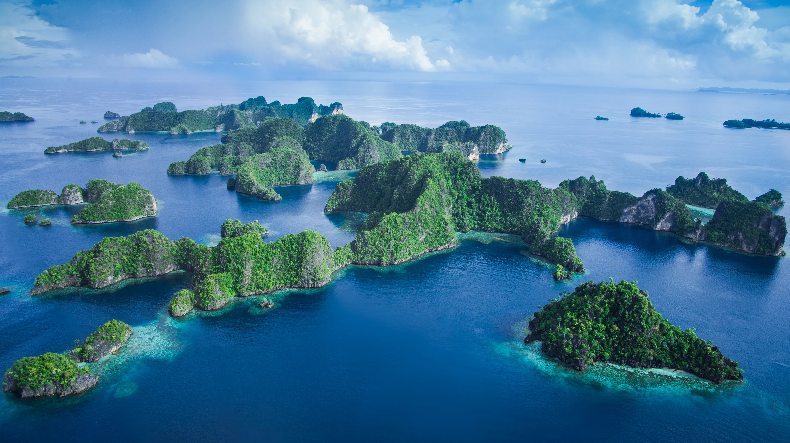
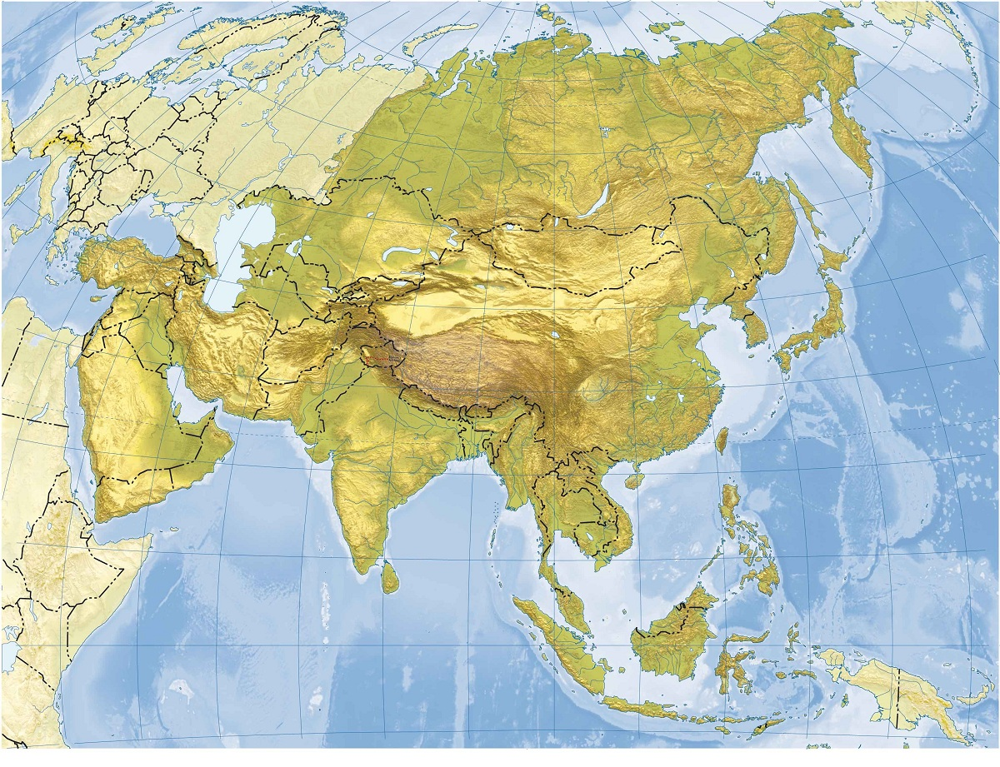
ყველაზე დიდი კონტინენტი:Asia კითხვის გაგრძელება...
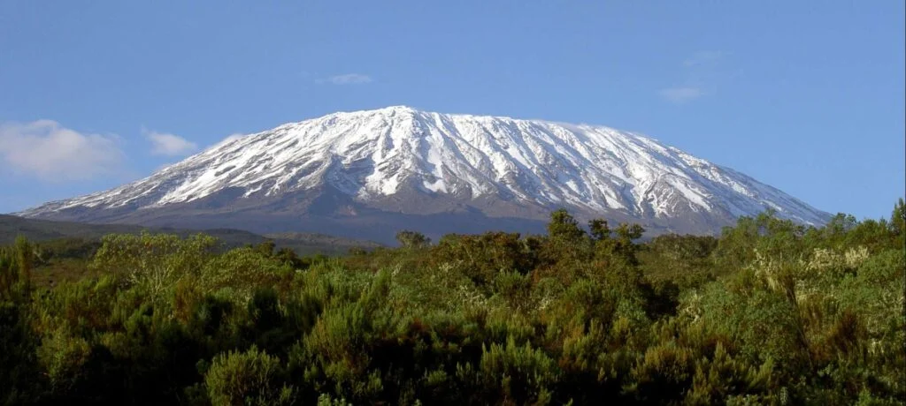
ყველაზე დიდი ცალკეული მთა: Mount Kilimanjaro კითხვის გაგრძელება...
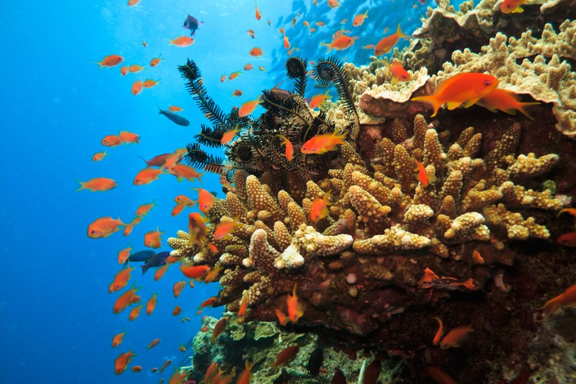
ყველაზე დიდი ცოცხალი მერწყული: Great Barrier Reef კითხვის გაგრძელება...
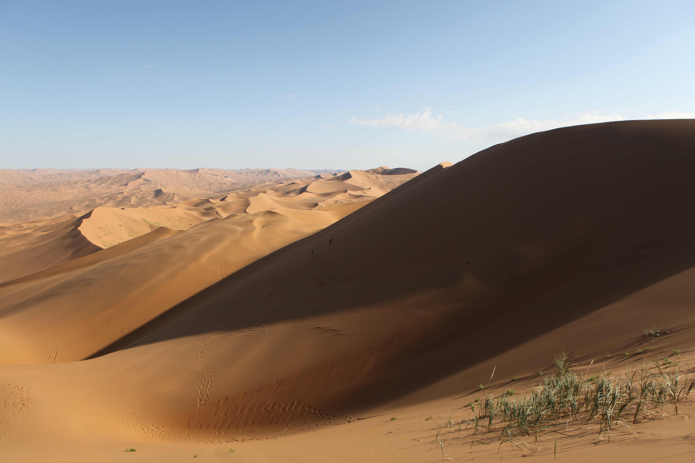
ყველაზე დიდი დუნე: Badain Jaran Desert კითხვის გაგრძელება...
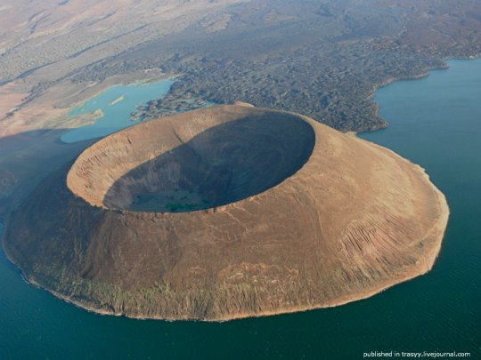
ყველაზე გრძელი ვულკანური თხრილი: Mount Etna კითხვის გაგრძელება...
ghhkkkkkkkkk